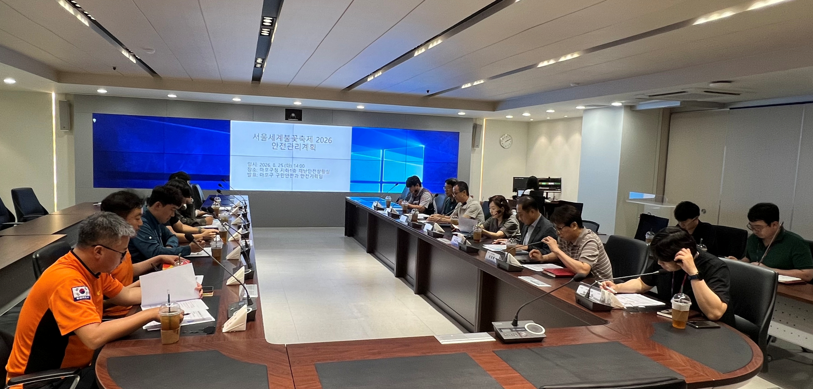

마포구, 불꽃축제 전야부터 7개소 166명 투입 안전관리
9월 4~5일 이틀간 총 166명 안전 인력 배치

[시사포커스 / 김재록 기자] 마포구(구청장 유동균)는 오는 9월 5일 여의도 한강공원에서 열리는 ‘서울세계불꽃축제 2026’을 앞두고 종합 안전관리 대책을 가동한다고 2일 밝혔다. 축제 행사장은 여의도이지만, 혼잡을 피해 인근 마포구로 대규모 인파가 몰릴 가능성에 대비한 선제적 조치다. 마포구는 8월 25일 경찰·소방 등 유관기관과 안전대책을 협의해 안전관리계획을 최종 수립하고, 8월 28일에는 관계부서 합동 현장점검을 실시해 주요 관리구역의 시설물과 보행 동선을 면밀히 점검했다.
마포구에 따르면, 안전관리는 전야제인 9월 4일 오후 6시부터 밤 11시까지, 본행사인 9월 5일에는 오후 2시부터 밤 11시까지 이틀간 이어진다. 주요 관리구역은 마포역, 마포새빛문화숲, 밤섬공원, 현석마을마당, 마포어린이공원, 헨켈타워 등 총 7곳이다. 현장에는 구청 직원과 안전요원 등 총 166명이 투입되며, 전야제에 49명, 본행사 당일 117명이 집중 배치된다. 재난안전상황실과 CCTV 통합관제센터가 실시간 현장을 모니터링하고, 불법 주정차·노점상 단속과 보행환경 정비도 사전에 마친다. 마포보건소는 마포새빛문화숲과 마포유수지 공영주차장에 구급차량과 구급인력을 배치한다.
유동균 마포구청장은 “서울세계불꽃축제는 많은 구민과 관광객이 찾는 대규모 행사인 만큼 안전 확보가 최우선”이라며 “철저한 현장관리와 유관기관 협업을 바탕으로 모두가 안심하고 축제를 즐길 수 있도록 최선을 다하겠다”고 밝혔다. 마포구는 인파가 예상치 못한 곳에 갑자기 몰릴 경우를 대비해 안전요원을 즉시 이동 배치하는 기동 대응 체계도 갖추고 있다.